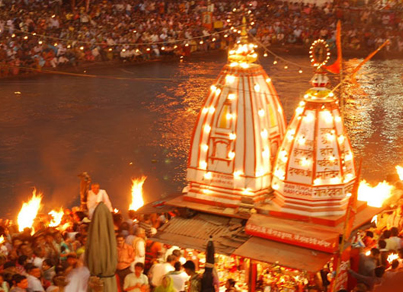
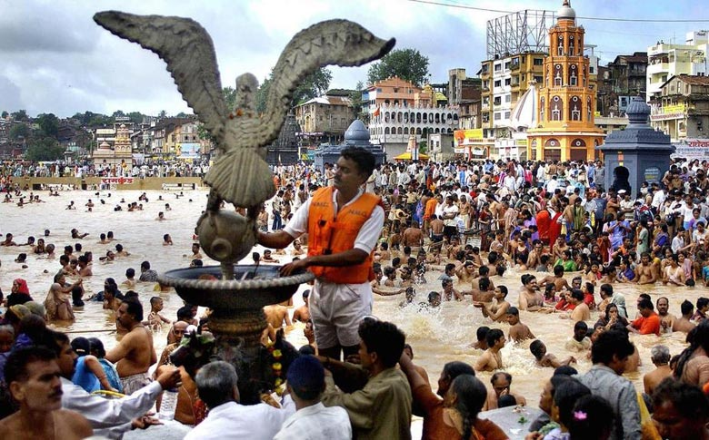
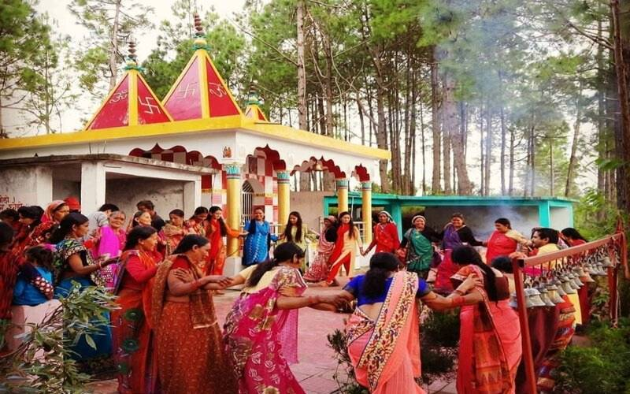

Fairs and festivals



Where the sky bows down in front of the Himalayas that is Devbhoomi Uttarakhand.
When you are stressed come to Devbhoomi.
Aipan is a ritualistic folk art, native to the Kumaon region of Uttarakhand. It is drawn to commemorate auspicious occasions, festivals and even rituals performed during death of a person. The art form is also known to offer protection against evil.
Wood carving is an art mastered by the craft-persons of Uttarakhand. The state is abundant in wood and wood products. The houses of the region have the carvings on their doors, windows and ceilings marvelously adorned in a simple and gorgeous style by the artisans. The open space of the windows is filled with specific latticework
Garhwal is inhabited by people belonging to a number of ethnic groups and castes. These include Rajputs who are believed to belong to the Aryan origin, Brahmins who migrated after the Rajputs or later, tribals of Garhwal who stay in the Northern tracts and comprise of Jaunsaris, Jadhs, Marchas and Van Gujars.
Kumaon is one of the most Culturally rich region of not only of Uttarakhand but of India too. Weather its Tradition attire like Pichora or Dance forms like Chholiya or decorative art form like Aipan, Kumauni Culture is well know for its rich heritage, traditions and rituals.
Uttarakhand is a state in North India. Its name, which means "northern land" or "section" in Sanskrit, is mentioned in early Hindu texts as the combined region of Kedarkhand and Manaskhand. In the Puranas, Uttarakhand was the ancient term for the central Indian Himalayas. Its peaks and valleys were known as Svarga loka: a temporary abode of the righteous, and the source of the Ganges. Indo-Aryan tribes arrived by the Vedic period. At that time, present-day Uttarakhand was also reportedly inhabited by rishis and sadhus. Uttarakhand is known as "the land of the gods" (Devbhumi) because of its number of Hindu pilgrimage sites. During the Vedic period, several small republics known as Janapada existed in this region. The Pauravas, Kushanas, Kunindas, Guptas, Katyuris, Palas, Chands, Parmars (or Panwars), and the British have ruled the state by turns.